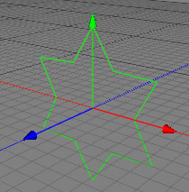

The star object is a parametric spline object which gives you a star spline which you can modify in a number of different ways. It's basic form appears as below.

Properties
Corners: Specifies the number of points on the star.
Radius outer: Outer radius of the star.
Radius inner: Inner radius of the star.
Twist: Define how much the corners of the star will be twisted around the orientation axis.
Orientation: Specifies the axis to which the star will be perpendicular.